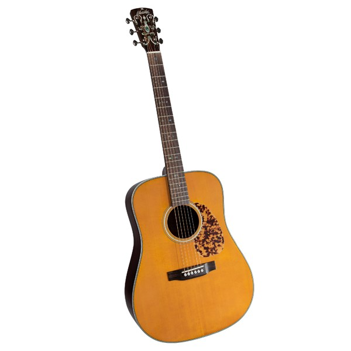

Blueridge BR-160E
East Indian rosewood back and sides add a strong bass to the spruce top's already full sound.

Fender Player Jazz Bass
With its dual single-coil pickups and smooth playing feel.

Fender America
This Stratocaster features a two-point tremolo bridge with vintage-style saddles

Fender 2020 custom
Features a roasted Ash body, Spalted Maple top, and a Roasted AAA Birdseye Maple neck